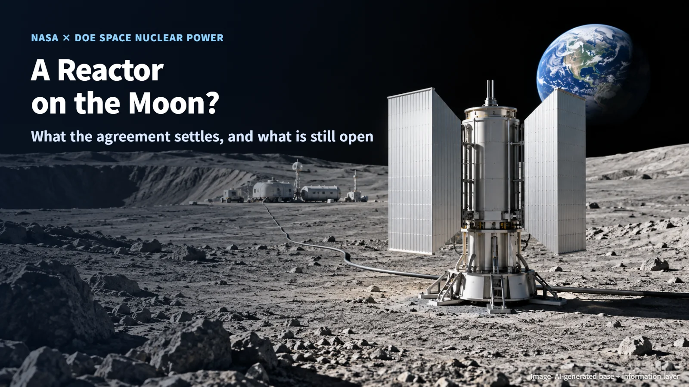
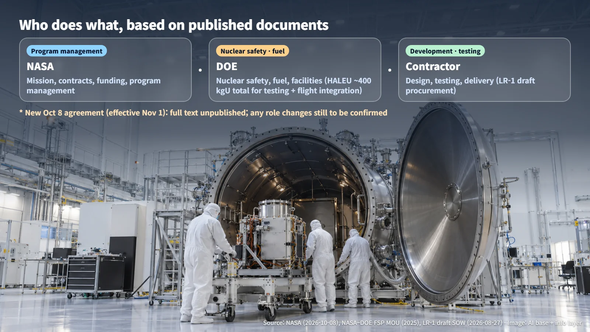
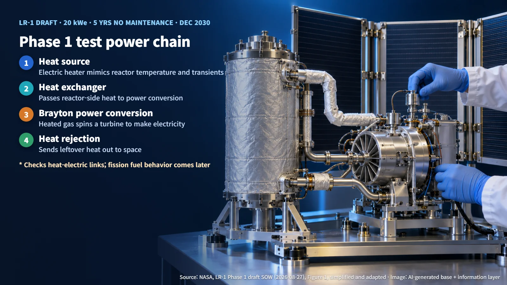
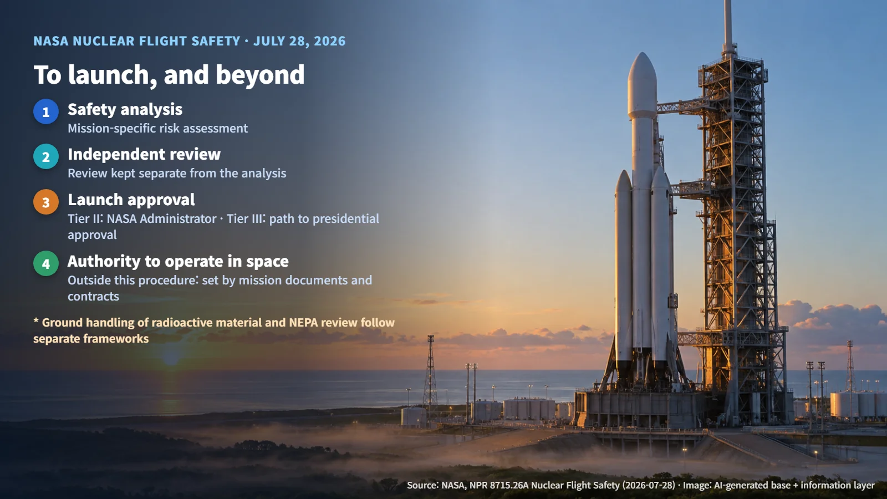

United States · Space Nuclear Power
A Nuclear Reactor on the Moon? What the New NASA–DOE Space Nuclear Agreement Settles, and What Is Still Open
NASA and DOE have widened their space nuclear partnership from research to operations, while the LR-1 lunar reactor is still at the electrically heated test stage and launch approval follows its own path.
The idea of placing a nuclear reactor on the Moon can sound like science fiction, and for many people the first worry is simple: what happens if something goes wrong during launch? The question is back in the news because on October 8, 2026, the National Aeronautics and Space Administration (NASA) and the U.S. Department of Energy (DOE) signed a new space nuclear agreement. Let's look calmly at what this agreement actually establishes and which pieces are still to be decided.

What the Agreement Broadens: From Research to Operations
On October 8 in Washington, NASA and DOE signed a memorandum of understanding (MOU) on cooperation in space nuclear power and propulsion. An MOU is a document that sets out how two organizations intend to work together, and this one is scheduled to take effect on November 1. As of October 13, the signatures are in place and the agreement is waiting for that effective date.
The scope of cooperation starts with advanced research and fuel production and continues through testing, launch integration and operations. The vision is to connect every step in a single line: from fuel in the laboratory, across the launch pad, to electricity generated on the lunar surface. The agreement reinforces the agencies' existing cooperation on fission and radioisotope power systems, and it also covers support for the radioisotope power and heater units on the Dragonfly mission, which is scheduled to launch in 2028.
These two kinds of power sources work differently. A reactor produces heat through a fission chain reaction, while a radioisotope power source uses the heat that radioactive material gives off as it decays on its own. Because their principles and requirements differ, each one follows its own design and approval path.
The full text and annexes of the new agreement have not been made public. Whether it creates new responsibilities, shifts existing ones or replaces earlier agreements therefore remains to be confirmed once those documents are available.
Who Does What: NASA, DOE and the Contractors
The best reference point is the existing Fission Surface Power (FSP) agreement, which covers a reactor power source designed to sit on the lunar surface. DOE signed it on December 12, 2025, and NASA on December 22; the date of the final signature is its effective date. Under that agreement, NASA handles contracts, funding and program management, while DOE provides nuclear safety, fuel and facility support. In NASA's draft procurement documents, the contractor is responsible for design, testing and delivery. The MOU itself carries no funding obligation; the actual work is carried out through separate interagency agreements (IAAs).
The fuel figure deserves a careful reading. Under the existing agreement, DOE supports a total of about 400 kgU of high-assay low-enriched uranium (HALEU). HALEU is uranium with a higher share of the easily fissionable isotope than ordinary power-reactor fuel. The 400 kgU is a combined total for testing and flight integration, and it is a supply-support figure for the program as a whole rather than the load of a single reactor core or a quantity of finished fuel.
The April 2026 National Space Technology Memorandum (NSTM-3) likewise limits DOE's provision of uranium to cases where commercial supply is insufficient or unavailable, and it assumes funding and allocation procedures are in place. Supplying raw material and turning it into fuel that is loaded into a reactor are separate steps.

The LR-1 Lunar Reactor: Currently at the "Electrically Heated" Test Stage
NASA's lunar surface reactor, LR-1, is currently at the draft procurement stage. The draft aims for a 20 kWe-class system (20 kilowatts of electrical output), at least five years of maintenance-free operation, and readiness for launch in December 2030.
Phase 1 aims to pass a preliminary design review (PDR) with real hardware within 18 months. At the heart of this phase is an engineering test unit (ETU) in which an electric heater stands in for the reactor and reproduces its temperature changes. That heat passes through a heat exchanger into a Brayton power conversion system, which heats a gas to spin a turbine and generate electricity, and the leftover heat is rejected through a heat rejection system. These components are connected and tested together in a thermal vacuum environment that resembles space.
This test verifies the connections between the heat and electrical systems, while fuel behavior under fission conditions is a question for later stages. For that reason, the draft adds separate radiation exposure testing of components, accounting for both the radiation produced by a reactor and the natural radiation on the Moon. Completing the flight vehicle, landing on the Moon and operating the reactor lie beyond the scope of Phase 1.

NASA is also pursuing SR-1 Freedom, a nuclear electric propulsion demonstration mission targeting launch in late 2028. It is planned to use a HALEU reactor and a 20 kWe closed-loop Brayton power conversion system, and to fly first, without a lunar landing, so that it can provide experience for LR-1. The year 2028 is a target date, and because the two missions operate in different environments, how much SR-1 data carries over to LR-1 will be determined case by case.
Launch Approval and Operations in Space Are Separate Gates
For many readers, the biggest concern is an accident during launch. NASA's nuclear flight safety procedure, which took effect on July 28, 2026, applies to the phases of flight that could affect Earth's biosphere. The handling of radioactive material at ground facilities and environmental review under the National Environmental Policy Act (NEPA) are covered by their own separate frameworks.
The procedure keeps safety analysis, independent review and launch approval as distinct steps. Tier II missions are approved by the NASA Administrator, while Tier III follows a path through the Director of the White House Office of Science and Technology Policy (OSTP) to request presidential approval, and the procedure also provides for the possibility of approval by the OSTP Director. The actual tier is set mission by mission. It works much like a door that opens only when several people each turn their own key.
There is one more boundary. Launch approval covers the flight itself, and the authority to operate a reactor in space is handled elsewhere: the procedure explicitly places the authority to operate nuclear systems in space outside its scope. Responsibility for switching LR-1 on and off and for ending its service life has to be set out in separate mission documents and contracts.

The agreement broadens cooperation that links fuel, testing, launch and operations, and it opens the way for the lunar reactor program to move ahead step by step. The answer to whether a reactor on the Moon is truly possible will come from the test results and approval documents that build up from here, more than from the signing ceremony.